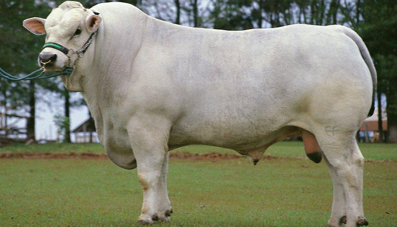

Marchigiana
Italia es el país de origen de esta raza; se encuentra principalmente en las provincias centrales. El pelo es corto y gris claro, pero obscuro en la borla de la cola, en las orejas y pestañas.
 Maine Anjou
Maine Anjou
Origen La Maine-Anjou resulta del mestizaje, a finales del siglo XIX y principios del XX, de la raza Mancelle con toros de raza Shorthorn de carne, después de una selección, llevada a cabo en una región mixta de cultivos y ganadería, por el formato y la facilidad de engorde.